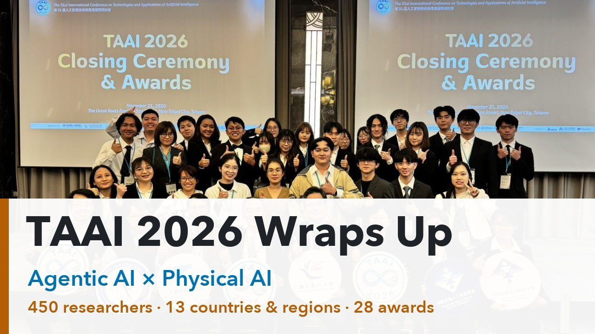
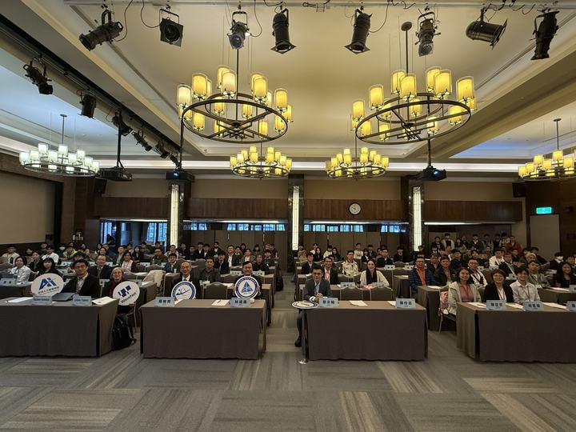
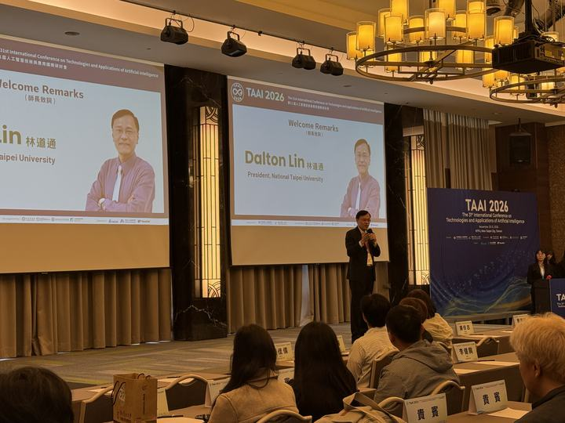
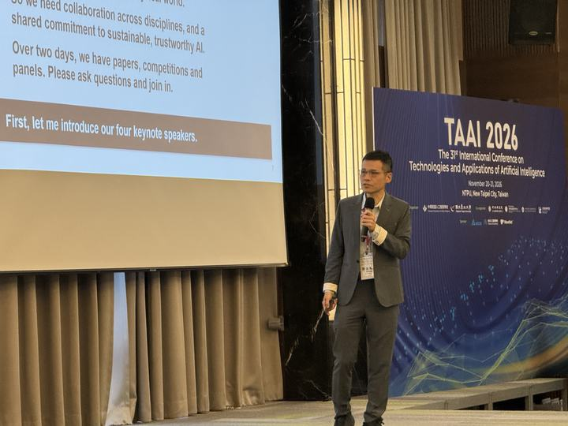
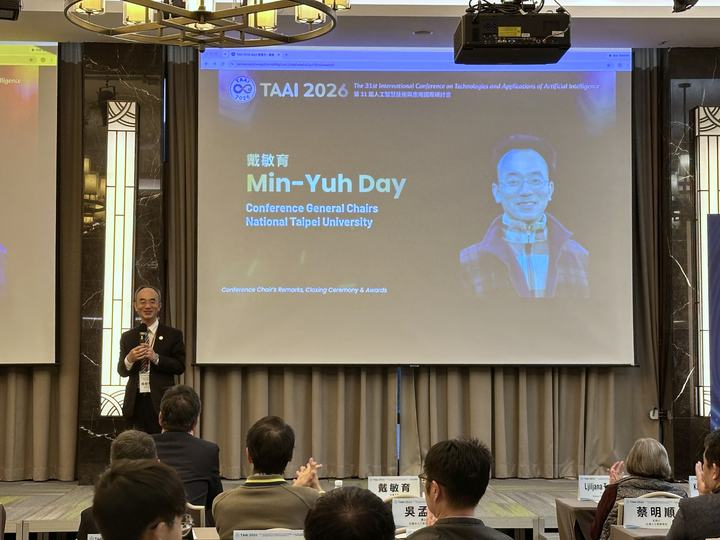

NEW TAIPEI CITY, Taiwan, November 22, 2026
The 31st International Conference on Technologies and Applications of Artificial Intelligence (TAAI 2026), jointly organized by the Taiwanese Association for Artificial Intelligence (TAAI) and National Taipei University (NTPU), took place on November 20–21 at the Great Roots Forestry Spa Resort in Sanxia District, New Taipei City. Under the theme “Agentic AI & Physical AI for Sustainable Innovation,” the conference brought together 450 authors from about 90 academic and research institutions in 13 countries and regions. Through keynote talks, paper presentations, industry forums, tutorials and innovation competitions, it examined how AI is moving from generative AI toward autonomous decision-making, physical interaction and cross-domain applications.
The conference received 205 submissions, and 157 papers were presented: 69 in the international track and 88 in the domestic track, across 14 oral and 7 poster sessions. Authors from Japan contributed to 23 papers, reflecting the Taiwanese AI community’s deepening international collaboration. International Track papers will be published by Springer as post-proceedings in Communications in Computer and Information Science (CCIS), raising the international visibility of the work.
To recognize outstanding research and scholarly exchange, the conference presented 28 paper and presentation awards, each with an electronic certificate that has its own permanent link, QR-code verification and a PDF download, putting the conference’s sustainability commitment into practice digitally.
Four keynote talks on frontier AI and real-world applications
TAAI 2026 invited four leading scholars from the United States, Canada, Japan and Taiwan to give keynote talks on graph foundation models, speech technology, cybersecurity and adaptive dialogue systems.
Prof. Philip S. Yu, UIC Distinguished Professor at the University of Illinois Chicago and ACM, IEEE and AAAS Fellow, presented his research on Riemannian geometry for next-generation graph foundation models. The session was chaired by Prof. Chih-Hua Tai of National Taipei University.
Prof. Yu Tsao, Research Fellow at Academia Sinica, presented neural speech enhancement and assessment and their applications in assistive oral communication, chaired by Prof. Ling-Jyh Chen of the Institute of Information Science, Academia Sinica.
Prof. Ljiljana Trajkovic of Simon Fraser University, Canada, an IEEE Fellow, discussed AI-driven network traffic analysis for anomaly detection and cybersecurity, chaired by Prof. Chan-Yun Yang, Dean of the College of Electrical Engineering and Computer Science, National Taipei University.
Prof. Kazunori Komatani of SANKEN, The University of Osaka, Japan, focused on long- and short-term adaptation of dialogue systems to their users, chaired by Prof. Hung-Yi Lee of the Department of Electrical Engineering, National Taiwan University.
Together, the four talks spanned AI from foundational theory to practical applications and opened new opportunities for international research collaboration.
Agentic AI and Physical AI: intelligent agents and embodied AI
As large language models advance rapidly, AI is moving beyond content generation and question answering toward agentic AI that can plan, use tools and carry out tasks on its own, and further toward physical AI that perceives its environment, learns to act and interacts with the physical world.
In response, the conference offered several tutorials and international exchanges.
In Agentic AI Tutorial 1, Ethan Yin-Hao Tsui, founder of HaoAI Future Technology, shared practical methods for deploying AI agents in the enterprise, turning well-defined steps into tools and leaving judgment and generation to large language models; the session was chaired by Prof. Min-Yuh Day. In Agentic AI Tutorial 2, Prof. Hao-Chiang Koong Lin of the National University of Tainan presented a generative-AI video workflow combining modern poetry, storyboarding and camera movement, chaired by Prof. Ling-Yen Pan.
In the Physical AI Tutorial, Prof. Shao-Hua Sun of National Taiwan University presented methods for building intelligent embodied agents with diffusion models and imitation learning, chaired by Prof. Min-Chun Hu, showing the potential of integrating AI and robotics.
The panel “Adaptive AI in the Real World,” moderated by Prof. Ling-Jyh Chen of Academia Sinica, brought together Prof. Yu Tsao, Prof. Ljiljana Trajkovic and Prof. Kazunori Komatani to discuss the technical challenges and future opportunities of deploying adaptive AI in the real world.
The Young Woman Star Session, convened by Prof. Lun-Wei Ku and moderated by Prof. Min-Chun Hu, featured Dr. Yun-Hsuan Lien of Academia Sinica and Prof. Meng-Fen Chiang and Prof. Woan-Shiuan Chien of National Yang Ming Chiao Tung University, who presented research on reinforcement learning, trustworthy LLM reasoning and affective computing, highlighting the innovation of a new generation of women researchers in AI.
Linking the NSTC, academia and industry for AI adoption and sustainable transformation
To narrow the gap between academic research and industry practice, the conference organized invited sessions on the NSTC Intelligent Computing program, industry applications, the AI CUP competition and cross-domain AI for sustainable innovation, fostering exchange among industry, government, academia and research institutes.
The NSTC Intelligent Computing session, chaired by program convener Prof. Chia-Hui Chang, featured Prof. Ming-Syan Chen of National Taiwan University, Prof. Vincent S. Tseng of National Yang Ming Chiao Tung University and Prof. Hung-Yu Kao of National Tsing Hua University, who reported on their research projects; the program also presented its work and plans for its sub-fields. An exhibition on Day 2 showed 13 research projects, reflecting the strength of intelligent computing research in Taiwan.
Two industry tracks, chaired by Ming-Shun Tsai of Taiwan AI Academy and Prof. Chien-Ping Chung of National Taipei University of Technology, featured Shih-Chieh Huang of FamilyMart Taiwan, Shihyu Alex Chu of the Market Intelligence & Consulting Institute (III), Kai-Feng Chien, CTO of Jigexian, and Chien-Wei Ho, CEO of Lychee Intelligence. They shared practical experience with AI-driven business models, business transformation, voice avatars, mixed reality, and permissions, human review and audit governance for AI agents.
The AI CUP session, chaired by Prof. Shih-Hung Wu of Chaoyang University of Technology, brought him together with Prof. Min-Yuh Day and Prof. Hong-Jie Dai of National Kaohsiung University of Science and Technology to share experience in competition design, ESG commitment verification and turning competition results into international publications.
Three Cross-Domain AI Sustainable Innovation forums, chaired by Prof. Min-Yuh Day, Dean Sherry Chia-Ying Chan of the International College of Sustainability Innovations at National Taipei University and Distinguished Prof. Chih-Chien Wang, featured Dr. Shr-Yi Chin of National Chung Hsing University, Prof. Chien-Ping Chung, Prof. Haobijam Basanta, Prof. Wei-Lun Chang, Prof. Chih-Chien Wang, Dr. Shih-Chieh Chien of the Taiwan Law Foundation and Prof. Tse-Ping Dong, Chairman of MARX Biotech. They examined the impact of AI on the economy, society and sustainability from the perspectives of energy governance, retrieval-augmented generation (RAG) in finance, trustworthy and sustainable AI, the digital divide, generative AI in legal education and AI transformation in the biotech and health industry.
157 papers in 21 sessions: AI research from Taiwan and abroad
The conference held 21 paper sessions, 7 international oral, 7 domestic oral and 7 poster sessions, led by 28 session chairs.
Topics included large language models and natural language processing, computer vision and multimodal learning, AI for health, intelligent agents and retrieval-augmented generation, speech and audio, security and trustworthy AI, computer games and game AI, data mining, optimization and reinforcement learning, and AI in education, reflecting the breadth of AI research and its cross-domain applications.
Beyond the paper sessions, the conference invested in the next generation of AI researchers. The TAAI Master’s and Doctoral Thesis Award session, chaired by Prof. Chia-Ru Chung of National Central University, featured presentations of 8 award-winning theses.
The high school sessions, organized by Prof. Jen-Wei Huang of National Cheng Kung University, featured 4 long and 6 short papers, giving high school students a chance to experience academic research, present their work and take part in professional exchange.
The finals and award ceremony of the NAPAI Agentic AI Innovation Competition for Campus Applications, organized by the NAPAI program office and chaired by Prof. Chia-Hui Chang, featured live demonstrations and judging of 16 teams, showing the potential of intelligent agents on campus.
The conference also held an online Computer Game Competition, and TAAI held its General Assembly on November 20.
28 academic awards announced; electronic certificates online
To honor outstanding research and scholarly communication, TAAI 2026 presented 28 paper and presentation awards: 7 paper awards, 14 Best Oral Paper Presentation Awards and 7 Best Poster Paper Presentation Awards.
The Best Paper, Best Student Paper and Best Industry Paper Awards were presented at the Welcome Banquet on November 20. The three Best Paper Awards went to:
- “LAWRENCE: A Benchmark for Adversarial Lawyering in Taiwanese Criminal Law” (National Taiwan University)
- “Training-free Conditional Object Composition for Multi-object Image Generation with Diffusion Models” (National Taiwan University)
- “Evaluating Cluster-Based Noise Exclusion in Disaster Social Media Imagery under Recall Constraints” (Aoyama Gakuin University, Japan)
Three papers from National Taiwan University, National Central University and National Taiwan Normal University received Best Student Paper Awards, and a paper from the Institute for Information Industry received the Best Industry Paper Award.
At the Closing Ceremony on November 21, 14 Best Oral Paper Presentation Awards and 7 Best Poster Paper Presentation Awards recognized excellence in scholarly communication, presentation and knowledge exchange.
This year the conference introduced digital award certificates throughout. Each award has its own certificate page with a permanent link, a preview and a PDF download, and a QR code on each certificate links to the official conference website so that winners, institutions and others can verify it. This makes the awards verifiable and reduces the administrative work of reissuing and mailing paper certificates, in keeping with the conference’s focus on sustainable innovation.
Full list of winners and certificates:
https://taai2026.github.io/certificates/index.html
The association and organizers: trustworthy AI and international talent exchange
Prof. Richard Tzong-Han Tsai, President of TAAI and General Chair of TAAI 2026, said:
“AI is moving from answering questions to planning, using tools and carrying out tasks on its own, and step by step into robots and the physical world. This calls not only for more advanced technology but also for collaboration across disciplines and a shared commitment to trustworthy AI and sustainable development. TAAI will keep connecting academic research, industry needs and the next generation of talent to advance AI innovation and international exchange in Taiwan.”
Dalton Lin, President of National Taipei University, said:
“We are honored to have co-organized TAAI 2026 with the Taiwanese Association for Artificial Intelligence, bringing researchers from 13 countries and regions to Sanxia, New Taipei City, to share their latest AI research. National Taipei University will continue to deepen AI research and talent development, foster cross-domain collaboration, and respond to the needs of industry and society with innovative technology, bringing new momentum to sustainable development.”
Prof. Min-Yuh Day, General Chair of TAAI 2026, said:
“TAAI 2026 was made possible by the combined efforts of 61 organizing committee members from 21 institutions, and of all our speakers, researchers, reviewers, session chairs, volunteers and staff. Beyond the research in 157 papers, the conference connected research innovation with practical needs through agentic AI, physical AI, industry applications and cross-domain sustainability forums. Special thanks to the units of National Taipei University, our partners in Taiwan and abroad, and our 450 authors for their enthusiastic participation. Through TAAI, we hope to keep expanding the international impact of AI research in Taiwan and to develop more talent with cross-domain innovation skills.”
Thanks to 61 organizing committee members and partners across industry, government and academia
TAAI 2026 was made possible by teams across universities and institutions and by support from industry, government, academia and research institutes.
The conference was supervised by the National Science and Technology Council (NSTC), the Ministry of Education (MOE) and its Department of Information and Technology Education, and co-organized by Academia Sinica, its Research Center for Information Technology Innovation and Institute of Information Science, and the Industrial Technology Research Institute (ITRI).
The organizers especially thank Gold sponsor Delta Robotics Innovation Center (DRIC); Bronze sponsors Taiwan AI Academy and Wavenet, which sponsored high school students’ registration fees; and 23 partners including National Taiwan University and Japan’s National Institute of Informatics (NII).
The organizing committee consisted of 61 members from 21 institutions, including National Taipei University, Academia Sinica, National Taiwan University, National Tsing Hua University, National Central University, National Cheng Kung University, National Yang Ming Chiao Tung University and Japan’s National Institute of Informatics, reflecting strong collaboration across institutions.
The organizers also thank President Dalton Lin, Vice President Yue-Shan Chang, Dean Chi-Jui Huang of the College of Business, Dean Chan-Yun Yang of the College of Electrical Engineering and Computer Science and Dean Sherry Chia-Ying Chan of the International College of Sustainability Innovations at National Taipei University for their support; and Distinguished Prof. Chih-Chien Wang, Prof. Yean-Fu Wen, Associate Prof. Ling-Yen Pan and Assistant Prof. Huai-Sheng Huang of the Graduate Institute of Information Management, administrative assistant Ya-Yen Teng, Ssu-Yin Chen of the AI4X Research Center, Xylia Yu-Yu Yeh of the AIAM program and the interdisciplinary student team for their dedication.
The organizers also thank all opening speakers, keynote speakers, forum moderators and panelists, tutorial speakers, session conveners, competition judges and teams, reviewers, staff and volunteers who together made this international AI conference possible.
A green meeting: sustainability through digital innovation
In line with this year’s theme of sustainable innovation, TAAI 2026 took a digital-first approach to conference information: no printed handbook was produced, the program, abstracts and full conference information were provided on the official website, and every award winner received an electronic certificate (printed certificates were presented at the award ceremonies).
Through scholarly exchange, industry connections, support for young researchers and digital sustainability measures, TAAI 2026 not only presented the latest AI research but also showed Taiwan’s academic community’s continuing commitment to trustworthy AI, cross-domain innovation and international collaboration.
With the conference concluded, the Taiwanese Association for Artificial Intelligence will continue to deepen international scholarly exchange and industry collaboration, working with the research community to open up new possibilities in AI research and applications.
90-second news video

Event photos












Event details
- Event:
- The 31st International Conference on Technologies and Applications of Artificial Intelligence (TAAI 2026)
- Dates:
- November 20–21, 2026
- Venue:
- Great Roots Forestry Spa Resort, Sanxia District, New Taipei City, Taiwan
- Organizers:
- Taiwanese Association for Artificial Intelligence (TAAI) and National Taipei University (NTPU)
- Theme:
- Agentic AI & Physical AI for Sustainable Innovation
- Website:
- https://taai2026.github.io/
- Closing press release:
- https://taai2026.github.io/press/taai2026-closing.html
- Awards and certificates:
- https://taai2026.github.io/certificates/index.html
About TAAI
The Taiwanese Association for Artificial Intelligence (TAAI) promotes artificial intelligence research, education and applications in Taiwan. Each year it holds the International Conference on Technologies and Applications of Artificial Intelligence with a Taiwanese university or research institute, bringing together Taiwan’s AI community and international peers. TAAI website: https://www.taai.org.tw/ (external site, opens in a new tab).
About NTPU
National Taipei University (NTPU) was established in 2000 from the College of Law and Business of National Chung Hsing University; its main campus is in Sanxia District, New Taipei City. NTPU’s faculty across computer science, data science, business and law, in seven colleges (the College of Law, College of Business, College of Public Affairs, College of Social Sciences, College of Humanities, College of Electrical Engineering and Computer Science, and International College of Sustainability Innovations), anchored this year’s cross-disciplinary program. NTPU website: https://new.ntpu.edu.tw/ (external site, opens in a new tab).
Media contact
- Contact: Ya-Yen Teng, Administrative Assistant, Graduate Institute of Information Management, National Taipei University
- Email: taai2026org@gmail.com
- TAAI 2026 website: https://taai2026.github.io/